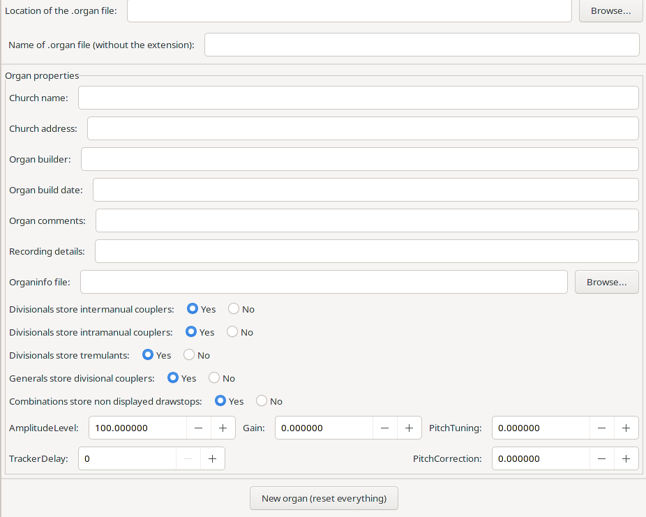

The Organ object is the top level object and what is important here is to specify the location of the .organ file in your directory structure (relative to the location of the samples, so don’t move your sample directory(s) after you’ve created your .organ file). Also important is the name of the file.

ChurchName (string, required) Name of the organ/church. This string should be unique, as setting files for organs with the same ChurchName are considered compatible. GrandOrgue will not load a settings file if the ChurchName does not match.
ChurchAddress (string, required) informational text displayed in the property dialog
OrganBuilder (string, required) informational text displayed in the property dialog
OrganBuildDate (string, required) informational text displayed in the property dialog
OrganComments (string, required) informational text displayed in the property dialog
RecordingDetails (string, required) informational text displayed in the property dialog
InfoFilename (string, not required) relative path to an HTML file with more information about the organ. This setting is currently not supported for organ packages.
Divisionals Store Intermanual Couplers (Boolean, required) determines if divisionals store/change the state of associated intermanual couplers.
Divisionals Store Intramanual Couplers (Boolean, required) determines if divisionals store/change the state of associated intramanual couplers.
Divisionals Store Tremulants (Boolean, required) determines if divisionals store/change the state of associated tremulants.
Generals Store Divisional Couplers (Boolean, required) determines if divisionals store/change the state of divisional couplers.
Combinations Store Non Displayed Drawstops (Boolean, default: true) determines, if the state of invisible objects (on the main panel) is stored in divisionals, generals and the setter.
Amplitude Level (float 0-1000, default: 100) Linear amplitude scale factor applied to the whole organ. 100 means no change.
Gain (float -120 - 40, default: 0) Amplitude scale factor in dB applied to the whole organ. 0 means no change.
Pitch Tuning (float -1200-1200, default: 0) Re-tune the whole organ the specified number of cents.
Tracker Delay(integer 0 - 10000, default: 0) Delay introduced by the tracker applied to the whole organ.